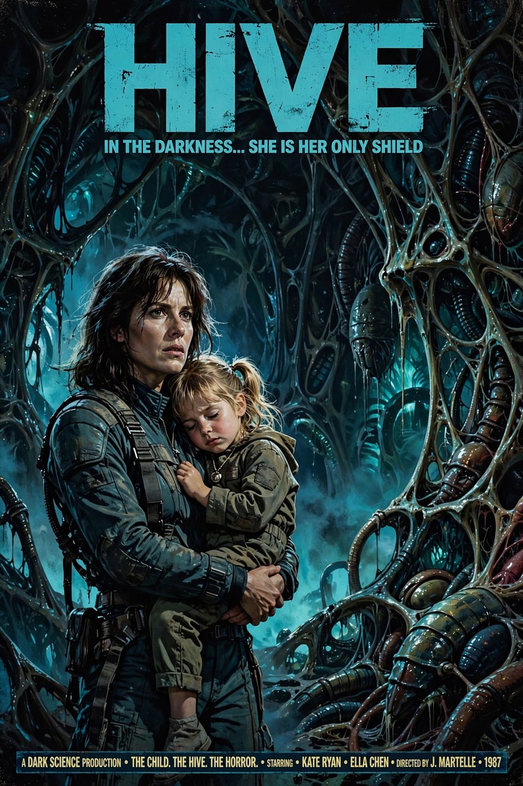

This article is about the 1986 film. For the 1979 predecessor, see Alien (film).
| Aliens | |
|---|---|
| Directed by | James Cameron |
| Written by | James Cameron |
| Produced by | Gale Anne Hurd |
| Starring | Sigourney Weaver |
| Cinematography | Adrian Biddle |
| Music by | James Horner |
| Distributed by | 20th Century Fox |
| Release date | July 18, 1986 |
| Running time | 137 minutes |
| Country | United States |
| Language | English |
| Budget | $18.5 million |
| Box office | $183.3 million |
Aliens is a 1986 American science fiction action film written and directed by James Cameron, produced by Gale Anne Hurd, and starring Sigourney Weaver. It is the sequel to Ridley Scott's Alien (1979) and the second film in the Alien franchise. Set 57 years after the events of the first film, it follows Ellen Ripley as she returns to the moon LV-426 with a unit of Colonial Marines to investigate the loss of contact with a human colony.

Ellen Ripley is rescued after drifting in hypersleep for 57 years. Her employers at the Weyland-Yutani Corporation doubt her account of the alien creature that killed her crew, and she loses her flight licence. When contact is lost with the terraforming colony Hadley's Hope on LV-426, Ripley is persuaded to return as an adviser accompanying a detachment of Colonial Marines aboard the starship Sulaco.
The marines find the colony deserted except for a traumatised young girl, Rebecca "Newt" Jorden. The aliens have overrun the colony, and most of the marines are killed in an ambush in the atmosphere-processing station. Ripley, Corporal Hicks, the android Bishop and Newt are among the few survivors. When their dropship crashes, they barricade themselves inside the colony complex and await rescue. Company executive Carter Burke attempts to have Ripley and Newt impregnated by facehuggers so he can smuggle alien embryos back to Earth; Ripley exposes him and he is later killed by an alien.
Newt is captured, and Ripley arms herself and descends into the hive to rescue her, confronting the alien Queen. Escaping to the Sulaco aboard a dropship piloted by Bishop, they discover the Queen has stowed away. Ripley battles her with a cargo power loader and ejects her into space. Ripley, Newt, Hicks and the damaged Bishop then enter hypersleep for the journey home.
Sigourney Weaver stars as Ellen Ripley, with Michael Biehn as Corporal Dwayne Hicks, Carrie Henn as Newt, Mark Rolston as Private Drake, William Hope as Lieutenant Gorman, Paul Reiser as Carter Burke, Lance Henriksen as Bishop, Bill Paxton as Private Hudson, Jenette Goldstein as Private Vasquez and Al Matthews as Sergeant Apone.
Cameron was hired to write the sequel while working on The Terminator (1984); the success of that film prompted 20th Century Fox to green-light Aliens with Cameron as director. Principal photography took place at Pinewood Studios in England. James Horner composed the score. The film's creature and mechanical effects involved Stan Winston's studio for the Queen and power loader.
Aliens was released on July 18, 1986, grossing $183.3 million worldwide against a budget of about $18.5 million. It was nominated for seven Academy Awards, winning two: Best Sound Effects Editing and Best Visual Effects. Weaver's performance earned an Academy Award nomination for Best Actress, a rare recognition for a science-fiction action film. The film is frequently ranked among the greatest action and science-fiction films of all time, and is often cited alongside Terminator 2: Judgment Day as a sequel that equals or surpasses its predecessor.
The film expanded the franchise's mythology, introducing the Colonial Marines, the alien Queen and the concept of the xenomorph life cycle as a hive organism. It was followed by Alien 3 (1992) and Alien Resurrection (1997), as well as the crossover Alien vs. Predator films and the prequels Prometheus (2012) and Alien: Covenant (2017). A 1990 director's cut, the Special Edition, added roughly 17 minutes of footage and became Cameron's preferred version for home viewing.